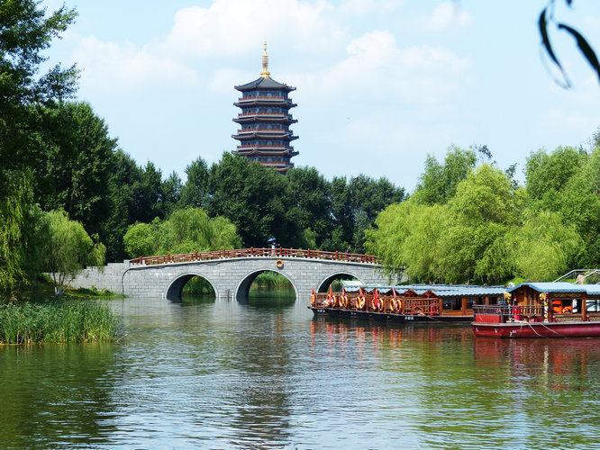
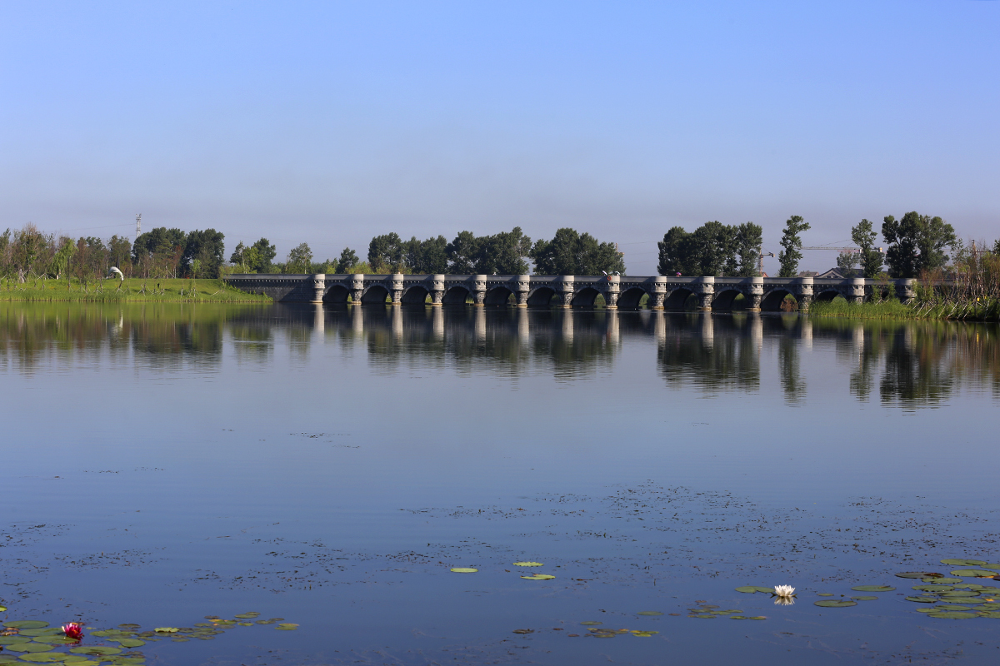
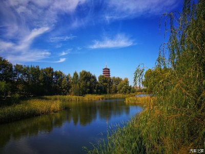
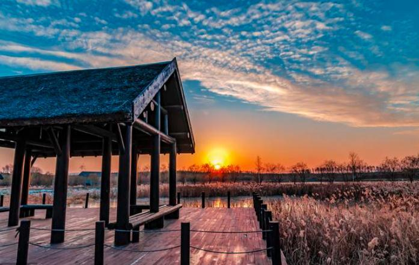
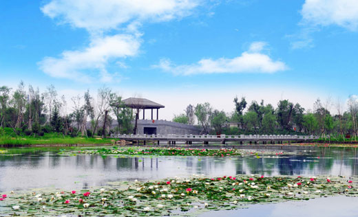
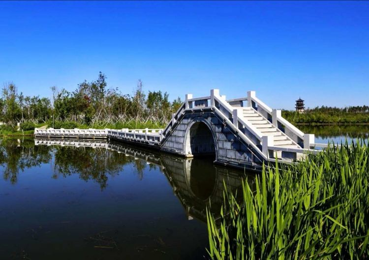

折叠 景区介绍
伪满皇宫博物院是在中国清朝末代皇帝爱新 觉罗·溥仪充当伪满洲国傀儡皇帝时居住的宫殿旧址上建立的宫廷遗址型博物馆，国家AAAAA级旅游景区。
{kind=link}
伪满皇宫是在原吉黑榷运局官署的基础上陆续改建扩建而成的，先后用作溥仪的“执政府”与“帝宫”。伪满皇宫占地面积13.7万平方米，伪满皇宫主体部分即核心保护区为4.6万平方米，其余为附属部分。主体部分以中和门为界分为内廷和外廷两部分。内廷包括缉熙楼、中西膳房、御花园、同德殿、书画库等，是溥仪及其眷属的生活区。外廷包括勤民楼、怀远楼、嘉乐殿、宫内府、日本宪兵室等，是溥仪的政务活动区。此外，伪满皇宫还有御用汽车库、马厩、跑马场、花窖、禁卫军营房、铁路专用线、建国神庙、祭祀管理机构、近卫军营房等附属设施。伪满皇宫大小建筑数十座，建筑风格古今并陈、中外杂揉，具有典型的殖民性特点。
伪满皇宫以其多重内涵、独特价值，成为中国近现代殖民文化的典型纪念地和警示性教育基地。1981年，吉林省人民政府公布伪满皇宫旧址为吉林省文物保护单位。
目前，伪满皇宫博物院已经成为占地20万平方米，集伪满宫廷（核心保护区）、红色旅游、文化休闲区、旅游商服于一体的特色人文景区。
折叠 交通攻略
北湖快轨线
长春北湖快轨工程力争在2016年与地铁1号线同时建成通车
快速轨道交通北湖线设车站13座，包括:北环路站、一二三中学站、小南村站、小城子街站、后水泉站、北湖公园站、三间房站、龙翔站、孵化园站、长春工大站、长春师范站、省交通学院站、太平村站。
北湖专线
公交车两端终点为北湖万寿寺和长春站北口，长春站北口、龙翔广场、北湖公园、万寿寺4个站点乘车。北湖万寿寺终点站首车6时30分发车，末车17时30分发车，而在长春站北口终点站首车7时10分发车，末车18时10分发车。
长春3路A
市郊线路 6:20-17:00 2元，IC卡:成人1.6元
去程: 北湖公园 - 环湖路 - 北湖大桥 - 龙翔广场 - 明斯克路 - 金钱村 - 后腰屯 - 前腰屯 - 东环城路 - 长新东路 - 亚泰大街 - 人民广场 (12站)
回程: 人民广场 - 亚泰大街 - 长新东路 - 东环城路 - 前腰屯 - 后腰屯 - 金钱村 - 明斯克路 - 龙翔广场 - 北湖大桥 - 环湖路 - 北湖公园 (12站)
折叠 园内交通
主园路--主园路形成环线，是公园内绿色交通线路，快速到 达各个景区。为保障公园与城市的融合性与开放性，公园内主干交通道路与城市路网衔接，可根据公园管理的具体需要，在南、北两处入口设置管理卡口进行封闭管理。
次园路--连接主园路及各景区的枝状道路。主要游步道--游览各景区内的主要游步道。
入口--公园的交通规划根据城市路网的特点及主要人流方向，将公园主入口设计在西南部，方便外来游客直接进入园区。此外，分别在公园北部、中部设计入口，方便不同方向的游客进入公园。
湖滨开放带--规划将滨湖地区设计为开放带，游客可自由进入，满足常住人口对滨湖休闲的需求，并有利于带动滨湖休闲产业综合体的发展，塑造现代而繁华、优美而舒适的滨湖休闲氛围。在湖滨开放带的中部设计码头及游客服务中心，供游客进入公园内部，也可以实现公园售票、交通流量控制等运营管理措施。
机动车停车场--在南入口设置大型停车场，中部入口利用跨湖大桥桥下场地设置大型停车场。北湖天地、湿地教育中心等大型公共设施依照规范配置停车位。其他设施分别依据规范配备足量停车位，满足游客需求。停车场地均采用林荫停车形式，美化景观。
自行车停车场--各入口及大型公共设施、日常健身场地均配置自行车停车场，方便常住居民使用。
水上游线--近期实施内湖水上游线，各入口设置码头，在各个岛屿和景区设置停靠点，游客可选择水上、陆上两种方式到达各个景区。远期实现内湖与外河的沟通，形成完整的双环形游线，
游客可乘船遍游整个公园。
码头与游船停靠点--南部入口、中部入口、芦荡飞雪景区、湖荡春晓景区、北湖天地景区、民族家园景区、湿地教育中心景区都设置游船码头，在主要景点和滨水服务设施等设置游船停靠点。
折叠 开放时间
全年全天 9:00 - 17:00，免费。
折叠 最佳季节
夏季
折叠 景点相册


折叠 配套设施
完善的交通网络设计，让游人在游览过程中尽享惬意与便利。而园区内的服务体系建设更是让游人仿佛回到家里一样舒适和温馨。旅游服务设施主要分为住宿设施、餐饮设施、购物设施以及游览服务设施四大类。
住宿设施方面，公园提供各有特色的住宿设施，供不同游客选择。湖心依托优美的景观环境布局国宾馆;北湖天地景区设置了住宿设施;芦荡飞雪景区及民族家园景区利用现有村落的改造形成农家、民族村落，提供具有民俗风情的住宿设施。
餐饮设施方面，由于景区面积较大，餐饮设施结合各功能区分散布局，结合景观特色形成不同档次和风格，主要包括:集中在水上邻里景区、北湖天地景区、北城艺风景区的高级、特色、休闲餐饮;南部入口游客服务中心、长岛碧波景区、湖漾春晓景区的快餐及中档餐饮设施;芦荡飞雪景区的农家特色餐饮;民族家园景区民族特色餐饮等。
购物设施则主要布局在与城市紧密相连的北城艺风景区、北湖天地景区、商亭等小型购物设施结合景点设置。
文化艺术设施方面，北城艺风景区是体现城市艺术特色、提供文化交流的重要场所，布置影剧院、文化艺术中心等设施。
游览服务设施方面，主要包括游客服务中心、导游标识、休息庇护、环境卫生、生态展示、旅游管理、安全监督等各类配套设施。
折叠 景区景点
十大景区：北域艺风、花影浮碧、水上邻里、湖漾春晓、长岛碧波、北湖天地、芦荡飞雪、民族家园、涓流云影。